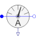

CurrentSensorPolyphase current sensor |

|
Diagram
{kind=link}
Information
This information is part of the Modelica Standard Library maintained by the Modelica Association.
Contains m current sensors (Modelica.Electrical.Analog.Sensors.CurrentSensor), thus measuring the m currents i[m] flowing from the m pins of plug_p to the m pins of plug_n.
Parameters (1)
| m |
Value: 3 Type: Integer Description: Number of phases |
|---|
Connectors (3)
| plug_p |
Type: PositivePlug |
|
|---|---|---|
| plug_n |
Type: NegativePlug |
|
| i |
Type: RealOutput[m] Description: Current in the branch from p to n as output signal |
Components (1)
| currentSensor |
Type: CurrentSensor[m] |
|---|
Used in Examples (6)
|
Modelica.Electrical.Machines.Examples.SynchronousMachines Test example: PermanentMagnetSynchronousMachine fed by FOC |
|
|
Modelica.Electrical.Machines.Examples.Transformers Asymmetrical load |
|
|
Modelica.Electrical.Machines.Examples.Transformers 6-pulse rectifier with 1 transformer |
|
|
Modelica.Electrical.PowerConverters.Examples.DCAC.PolyphaseTwoLevel Polyphase DC to AC converter with R load |
|
|
Modelica.Electrical.PowerConverters.Examples.DCAC.PolyphaseTwoLevel Polyphase DC to AC converter with R-L load |
|
|
Modelica.Magnetic.FundamentalWave.Examples.BasicMachines.SynchronousMachines Test example: PermanentMagnetSynchronousMachine fed by FOC |
Used in Components (3)
|
Modelica.Electrical.Machines.Sensors Length of space phasor -> RMS current |
|
|
Modelica.Electrical.Polyphase.Sensors Continuous quasi current RMS sensor for polyphase system |
|
|
Modelica.Electrical.Polyphase.Sensors Polyphase instantaneous power sensor |